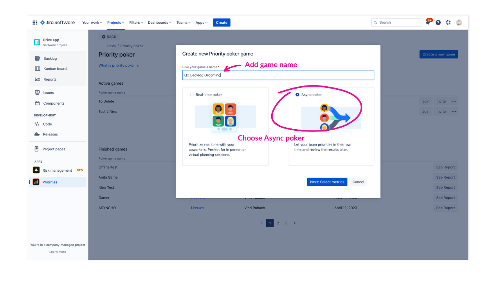
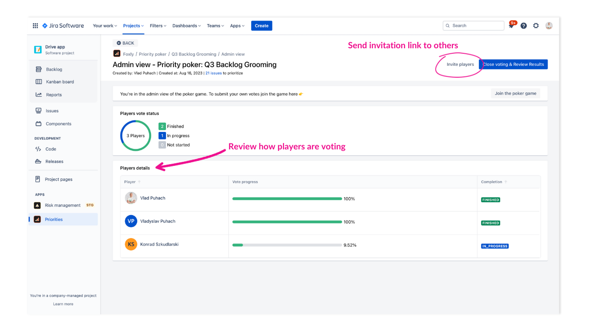
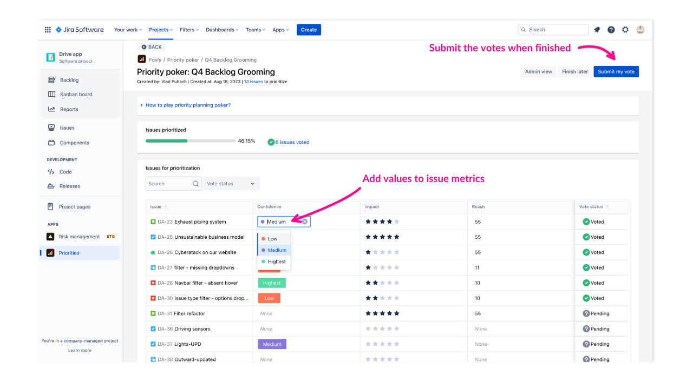
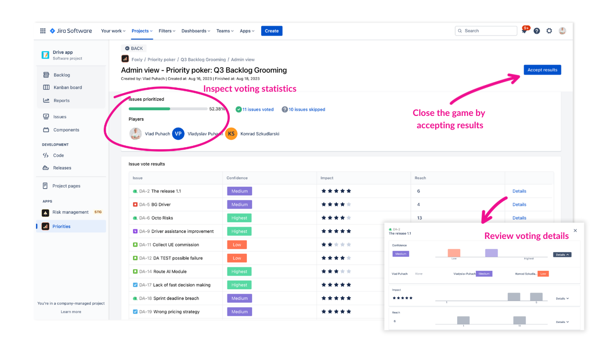

Offline (Async) priority planning poker
By choosing Asynchronous Planning Poker, you allow your team to vote calmly and independently, leading to a decrease in the duration of planning meetings. This type of poker lets users vote in their own time and gives them more flexibility.
How to create Async priority poker game
To create a new priority planning poker game, access Foxly by clicking the Priorities tab in the Project menu.

Click Priority poker in the top right corner.
Click Create a new game.
Choose Async poker.
Give your poker session a name and select the metrics you want to prioritize on the session.
Select issues you want to prioritize.
Click Create game.
You’ve created a new poker game.
Invite other players to the game via the link and once you’re ready, click Join the poker game to begin voting. New players can join anytime until a game administrator hasn’t closed voting.
How to administer the Async poker game
Once you’ve created a new game as admin, you are taken to the Game Admin View screen which includes the following information:
Pie chart with players' vote status (finished, in progress, or not started)
List of players participating in the game, their vote progress, and completion status
From the Admin page, you can invite other players, close voting, and review results.

Review the roles in priority planning poker.
How to vote on issue metrics (voting screen)
Once you’ve joined the game you are taken to the voting screen, where you can choose what issues to vote for.
Choose issue metrics and add values to them.
Filter issues by voted and pending.
Click Submit my vote after you finished voting on the issues.

How to review and accept voting results
After you, as admin, close the voting - you are directed to the Game Results screen.
Review voting details by clicking details next to each issue.
Inspect voting statistics in the report section.
Close the game by clicking Accept results.

Learn more about: